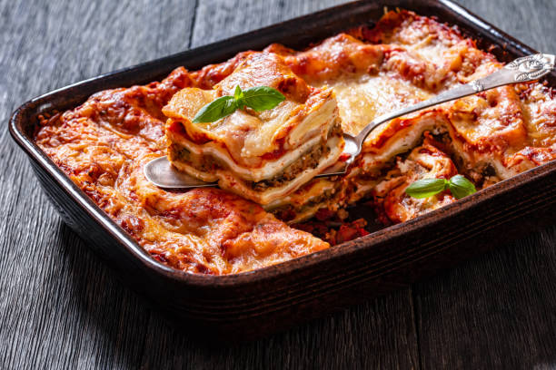

Lasagna

Description
Lasagna, also known by the plural form lasagne, is a
type of pasta, possibly one of the oldest types,[2] made in very wide, flat sheets.
In Italian cuisine it is made of stacked layers of pasta alternating with fillings
such as ragù (ground meats and tomato sauce), béchamel sauce, vegetables, cheeses
(which may include ricotta, mozzarella, and Parmesan), and seasonings and spices.
The dish may be topped with grated cheese, which melts during baking.
Typically cooked pasta is assembled with the other ingredients and then baked in an oven
(al forno). The resulting baked pasta is cut into single-serving square
or rectangular portions.
Ingredients
- Meat: This super meaty lasagna has sweet Italian sausage and lean ground beef.
- Onion and garlic: An onion and two cloves of garlic are cooked with the meat to add tons of flavor.
- Tomato products: You'll need a can of crushed tomatoes, two cans of tomato sauce, and two cans of tomato paste.
- Sugar: Two tablespoons of white sugar add subtle sweetness and enhance the flavor of the sauce.
- Spices and seasonings: This lasagna recipe is flavored with fresh parsley, dried basil leaves, salt, Italian seasoning, fennel seeds, and black pepper.
- Lasagna noodles: Use store-bought or homemade lasagna noodles.
- Cheeses: Parmesan, mozzarella, and ricotta cheese make this lasagna extra decadent.
- Egg: An egg helps bind the ricotta so it doesn't ooze out of the lasagna when you cut into it.
Steps
How to Make Lasagna Step-By-Step
- Make the meat sauce.
- Cook the noodles.
- Make the ricotta mixture.
- Layer the lasagna according to the recipe instructions.
- Cover with foil and bake.
- Let the lasagna rest before serving.
How to Layer Lasagna
- Meat sauce
- Noodles
- Ricotta mixture
- Mozzarella slices
- Meat sauce
- Parmesan cheese
- Repeat the layers, then top with the remaining Parmesan.